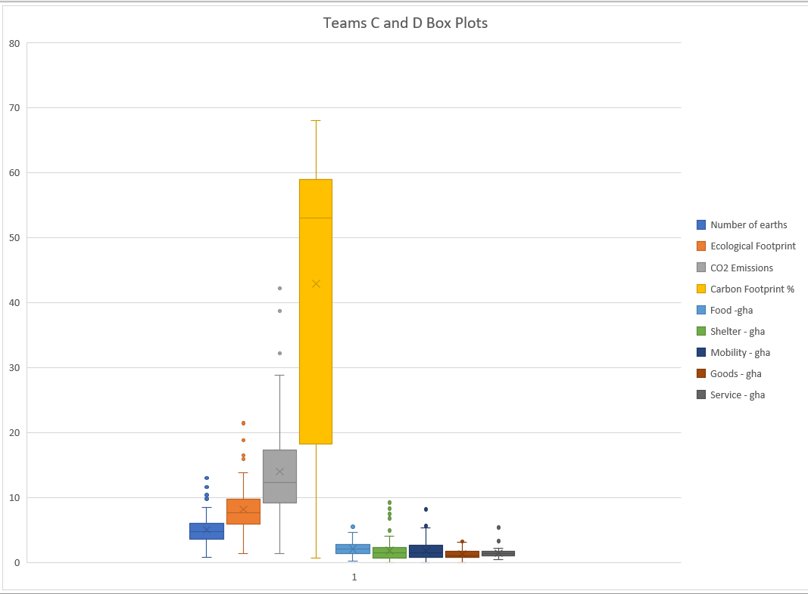
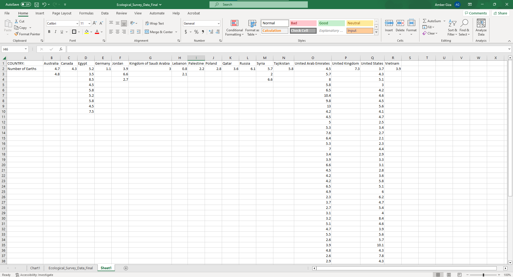
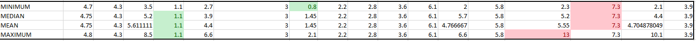
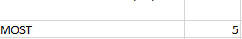
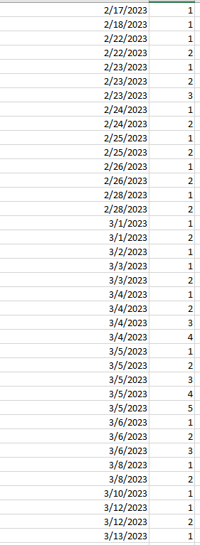

Results using Microsoft Excel
There's also the boxplots in Excel that can let us know more about the outliers:

As you can see from the boxplots:
- Number of Earths has 4 outliers
- Ecological Footprint has 4 outliers
- CO2 Emissions has 3 outliers
- Carbon Footprint(%) has no outliers
- Food - GHA has 1 outlier
- Shelter - GHA has 5 outliers
- Mobility - GHA has 2 outliers
- Goods - GHA has 1 outlier
- Service - GHA has 2 outliers
For answering the second question, I had to make another excel sheet within the workbook, and sort the numbers out. The data is sorted by Countries of Residency and the respondent's Number of Earths.

The syntax for finding the Mean, Median, Minimum and Maximums for each set is
- For Australia:
- "=MIN(B2:B3)"
- "=MEDIAN(B2:B3)"
- "=AVERAGE(B2:B3)"
- "=MAX(B2:B3)"
- For Canada:
- "=MIN(C2)"
- "=MEDIAN(C2)"
- "=AVERAGE(C2)"
- "=MAX(C2)"
- For Egypt:
- "=MIN(D2:D10)"
- "=MEDIAN(D2:D10)"
- "=AVERAGE(D2:D10)"
- "=MAX(D2:D10)"
- For Germany:
- "=MIN(E2)"
- "=MEDIAN(E2)"
- "=AVERAGE(E2)"
- "=MAX(E2)"
- For Jordan:
- "=MIN(F2:F4)"
- "=MEDIAN(F2:F4)"
- "=AVERAGE(F2:F4)"
- "=MAX(F2:F4)"
- For Kingdom of Saudi Arabia:
- "=MIN(G2)"
- "=MEDIAN(G2)"
- "=AVERAGE(G2)"
- "=MAX(G2)"
- For Lebanon:
- "=MIN(H2:H3)"
- "=MEDIAN(H2:H3)"
- "=AVERAGE(H2:H3)"
- "=MAX(H2:H3)"
- For Palestine:
- "=MIN(I2)"
- "=MEDIAN(I2)"
- "=AVERAGE(I2)"
- "=MAX(I2)"
- For Poland:
- "=MIN(J2)"
- "=MEDIAN(J2)"
- "=AVERAGE(J2)"
- "=MAX(J2)"
- For Qatar:
- "=MIN(K2)"
- "=MEDIAN(K2)"
- "=AVERAGE(K2)"
- "=MAX(K2)"
- For Russia:
- "=MIN(L2)"
- "=MEDIAN(L2)"
- "=AVERAGE(L2)"
- "=MAX(L2)"
- For Syria
- "=MIN(M2:M4)"
- "=MEDIAN(M2:M4)"
- "=AVERAGE(M2:M4)"
- "=MAX(M2:M4)"
- For Tajikistan:
- "=MIN(N2)"
- "=MEDIAN(N2)"
- "=AVERAGE(N2)"
- "=MAX(N2)"
- For United Arab Emirates:
- "=MIN(O2:O51)"
- "=MEDIAN(O2:O51)"
- "=AVERAGE(O2:O51)"
- "=MAX(O2:O51)"
- For United Kingdom:
- "=MIN(P2)"
- "=MEDIAN(P2)"
- "=AVERAGE(P2)"
- "=MAX(P2)"
- For United States:
- "=MIN(Q2:Q42)"
- "=MEDIAN(Q2:Q42)"
- "=AVERAGE(Q2:Q42)"
- "=MAX(Q2:Q42)"
- For Vietnam:
- "=MIN(R2)"
- "=MEDIAN(R2)"
- "=AVERAGE(R2)"
- "=MAX(R2)"
The data we get, looks like this:

The cells that are marked green indicate the lowest numbers, and the cells marked in red indicate the highest numbers, which help emphasize the number of earths that are there. Smaller Numbers of Earths are better than larger Numbers of Earths. Germany and Lebanon have the lowest, whereas the United Arab Emirates and the United Kingdom have the largest.
The syntax for finding the most occuring day here was "=MAX(B2:B121)". The result that came back was 5, so we go to the cell that has 5 as the total count of the Earth Overshoot Day.


Therefore, Earth Overshoot Day that occurs the most is March 5th.